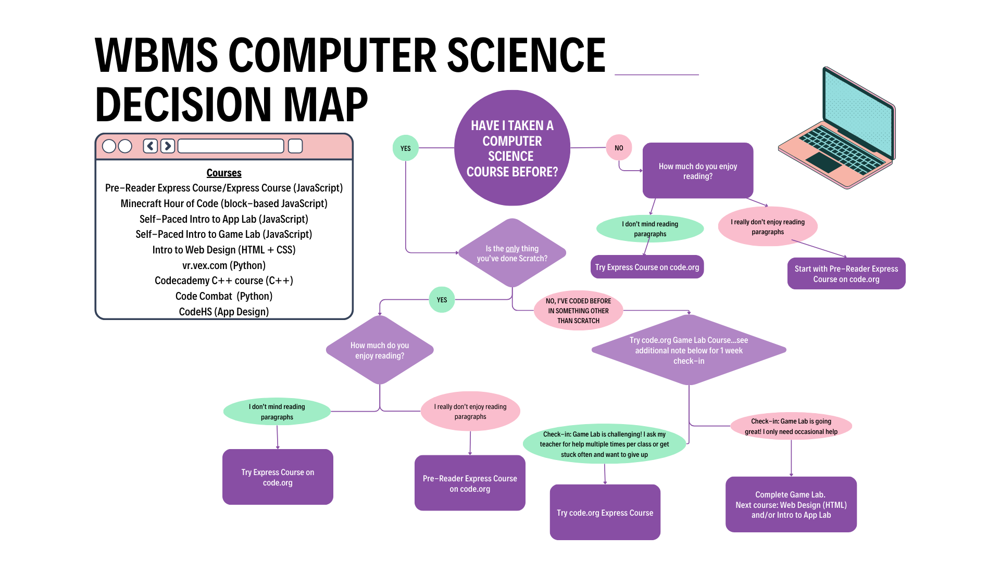

Thank you for visiting our student-managed computer science website! At Willie Brown, we believe in project-based STEM learning. We believe in empowering students to express their identities and interests through their work. Click here to learn a little bit more about some of the options students have in our coding classes.
Some students may gravitate toward learning multiple coding languages while some prefer to master one language through a portfolio of projects. Either goal is acceptable in our computer science program--our goal at Willie Brown is to build confidence in coding and leave Willie Brown knowing the impact of a STEM education.

Credits: Liam (Co Developer), Riley (Co Developer), Charles (Extra Help), Mr. Benson (Hosting Website)
View Code